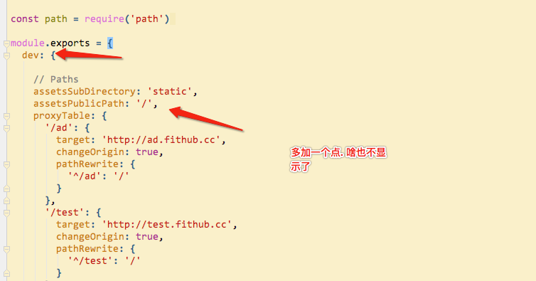
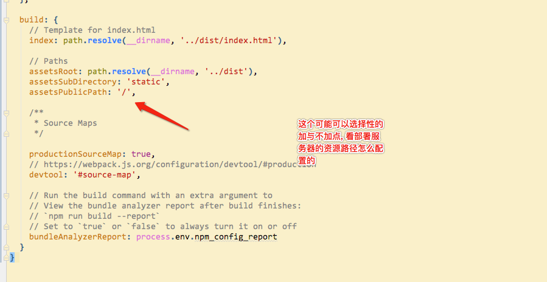
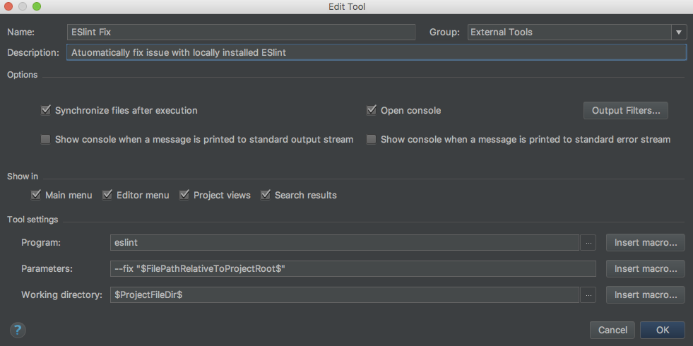
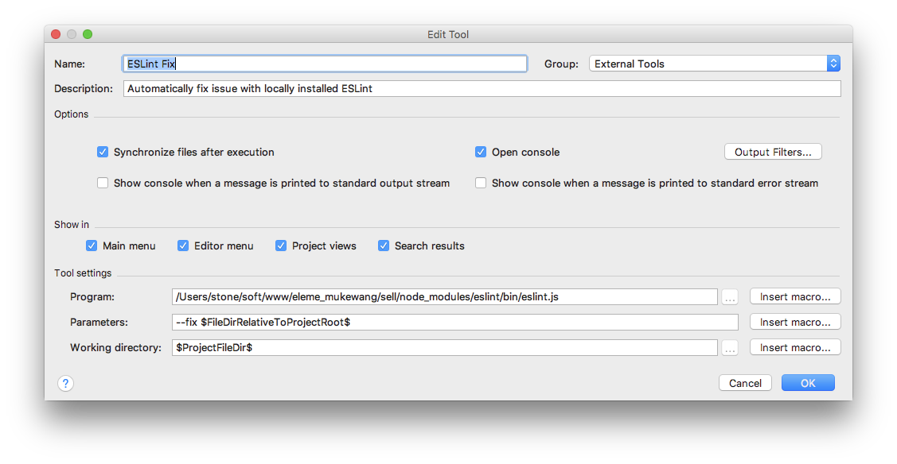
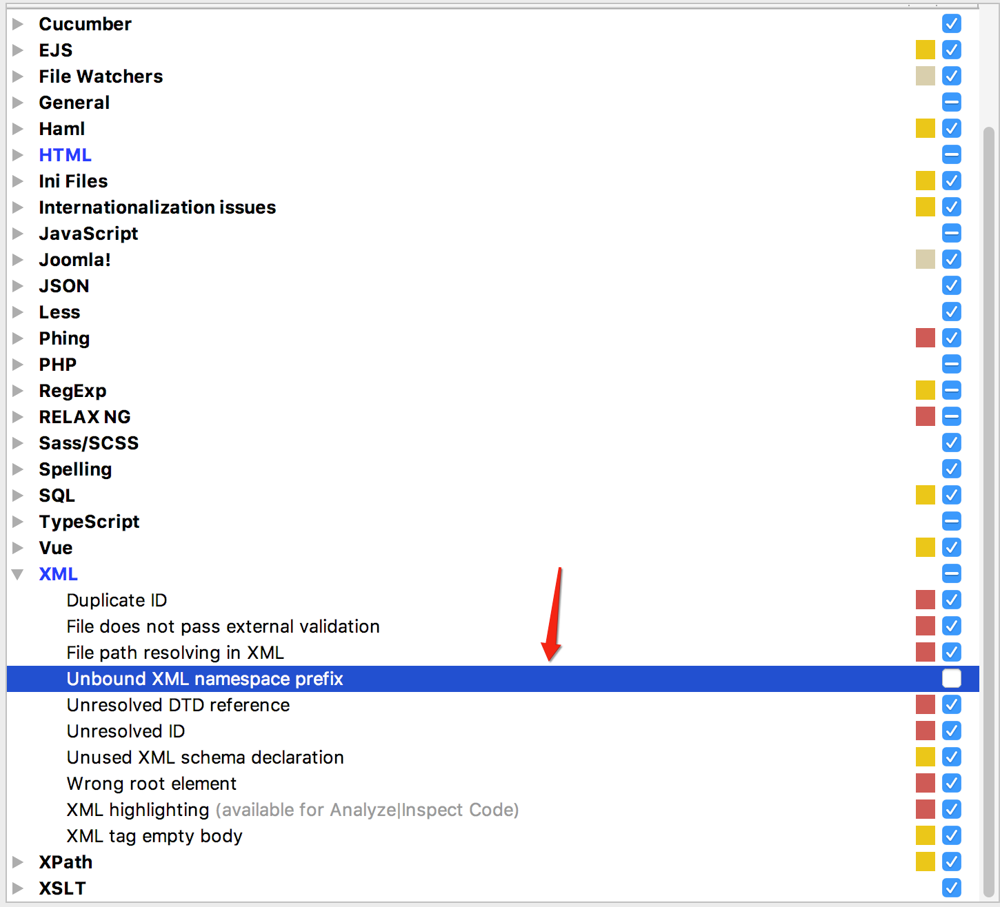
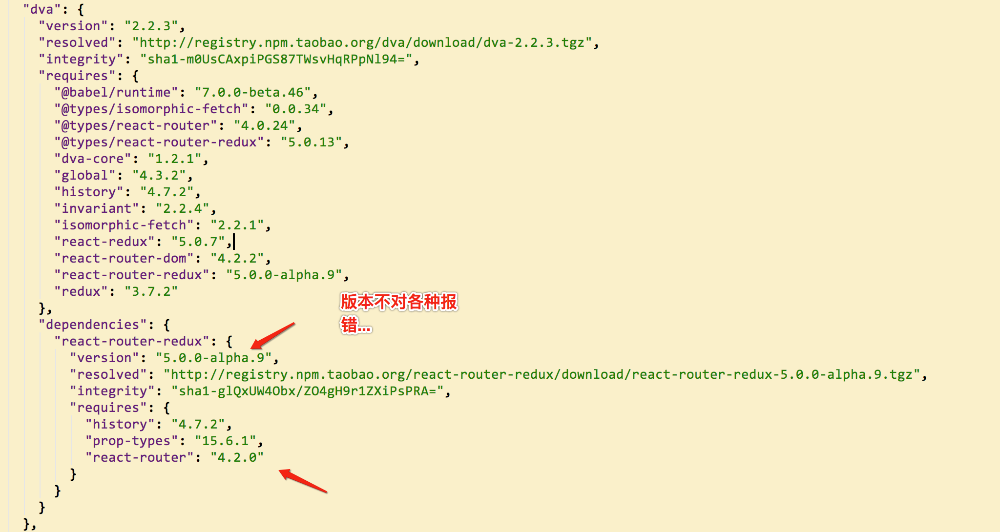

@(工作笔记)
trap-record
[TOC]
重装mac 坑...
买了pro一年了，几乎不怎么用，操作上不习惯，预打算安装个Mac + Ubuntu双系统，刚使用系统自带的磁盘管理工具进行分区， Mac就不能用了，真是尴尬。使用Command + R， 格式话磁盘，选择恢复系统，直接报错未能创建于apfs安装的预启动宗卷。百度之， 没找到好的解决方案。后来直接致电Apple技术支持，才知道是格式化不干净的原因。
使用Command + Option + R+开机键，也可以先按开机， 再Command + Option + R， 出现地球后松手，此时会有十几分钟的时间，据技术支持的客服说是在下载工具。下载结束后进入到磁盘管理，选择显示->显示所有磁盘。
先抹掉最下面这个（名称是随意的， 可能不同），选择APFS格式（固态硬盘）， 抹掉后卸载。
然后选择第一项， 抹掉磁盘
抹掉成功后退出磁盘管理， 恢复系统。（网上有的说需要使用外网，其实正常网络就OK）
安装成功后务必制作启动盘，再怎么瞎折腾，都不怕啦。
配置坑
 
-webkit-overflow-scrolling
坑爹的属性 , fixed 失效, 导致 导航栏 覆盖不了 , cube-page 使用时发现的, 注释掉... 目前还没遇到体验差的情况...

fastclick 重复点击报错bug修复
https://github.com/ftlabs/fastclick/issues/36 修复之后的完整代码 https://github.com/stone0117/fastclick
选择性关闭ESLint
https://segmentfault.com/a/1190000008742240
ESLint webstorm配置
https://blog.csdn.net/wk3368/article/details/50981767  
使用本地的eslint , 不适用 全局的
Intellij Idea：如何完全禁用错误提示
https://blog.csdn.net/u012814856/article/details/79044445
解决mac 外接显示器CPU爆涨的问题...
https://www.kawabangga.com/posts/2250 https://github.com/avibrazil/RDM RDM在微云上 retain切换到非retain, GPU减轻压力, 立马飕飕的, 但是画面质感降低了, 不过搞开发的性能最重要, 高清见鬼去吧...
如何为WebStorm设置SASS的File Watchers？
sass && scss http://geek100.com/2608.html
less https://www.deboy.cn/use-less-unit-function-to-solve-the-ide-error-of-rpx.html
彻底解决高版本 mac Kernel_task占CPU问题
https://blog.csdn.net/liumx2007/article/details/77164795 就是将整个/System/Library/Extensions/IOPlatformPluginFamily.kext 移到其它目录然后重启计算机。（如有权限问题，请进入恢复模式打开命令行运行csrutil disable, 然后sudo mv该文件) 参考网页：https://hasin.me/2017/06/17/how-to-stop-kernel_task-from-fucking-the-cpu-in-your-mac/
解决html5 audio iphone,ipd，safari不能自动播放问题
https://www.cnblogs.com/interdrp/p/4211883.html
vue 自定义指令坑 PHPStorm
This inspection checks for unbound namespace prefixes in XML. 
vue-loader 14版本和15版本 webpack配置不一样, 真坑
https://github.com/rails/webpacker/issues/1453
"vue-loader": "^14.2.2", "vue-loader": "^15.0.0",
const path = require('path');
module.exports = {
entry : './www/app/main.js',
output : {
path : path.resolve(__dirname, 'www/dist'),
filename : 'bundle.js',
publicPath: '/dist/',
},
//当你的js文件发生变化的时候，你在重新的保存的时候，会自动的再一次的打包
watch : true,
module : {
rules: [
{
test : /.vue?$/,
include: [ path.resolve(__dirname, "www/app") ],
exclude: [ path.resolve(__dirname, "node_modules") ],
// vue loader中含有babel, 但是没有插件
loader : "vue-loader",
},
],
},
resolve: {
alias: { 'vue$': 'vue/dist/vue.esm.js' },
},
devtool: "cheap-module-source-map",
plugins: [],
};
() => {
console.log('hello world');
}
dva 安装依赖还得点进去package.json查看依赖哪个版本...真坑...
比如 react-router-redux 版本

使用graphicsmagick时gm命令被占用
https://blog.csdn.net/revitalizing/article/details/50866013
使用mac时gm是git merge的别名
- 可以用which gm 看看从哪里来：gm: aliased to git merge
- unalias gm后再which gm 显示：/usr/local/bin/gm 然后gm就可以正常使用了。
使用上面的方法只是在当前终端暂时取消掉了gm这个git的别名，打开新的终端窗口，gm还是git中定义的一个别名，需要修改git配置文件中别名的定义。我用的git是zsh的插件，这些别名都是zsh默认的，要修改的话到~/.oh-my-zsh/plugins/git/git.plugin.zsh这里来修改默认的配置即可。